3.4 ANCOVA
Avant l’apparition du modèle linéaire, une version particulière d’un mélange de régression linéaire et d’une ANOVA avec une variable indépendante quantitative et une autre variable indépendante qualitative s’appelait une ANCOVA (ANalyse de la COVariance). Un tel modèle d’ANCOVA peut naturellement également se résoudre à l’aide de la fonction lm() qui, en outre, peut faire bien plus. Nous allons maintenant ajuster un tel modèle à titre de première application concrète de tout ce que nous venons de voir sur le modèle linéaire et sur les matrices de contrastes associées.
3.4.1 Bébés à la naissance
Nous étudions la masse de nouveaux nés en fonction du poids de la mère et du fait qu’elle fume ou non. Cette analyse s’inspire de Verzani (2005). Nous avons donc ici une variable dépendante wt, la masse des bébés qui est quantitative, et deux variables indépendantes ou prédictives wt1, la masse de la mère, et smoke le fait que la mère fume ou non. Or la première de ces variables explicatives est quantitative (wt1) et l’autre (smoke) est une variable facteur à quatre niveaux (0 = la mère n’a jamais fumé, 1 = elle fume y compris pendant la grossesse, 2 = elle fumait mais a arrêté à la grossesses, et 3 = la mère a fumé, mais a arrêté, et ce, bien avant la grossesse. Un dernier niveau 9 = inconnu encode de manière non orthodoxe les valeurs manquantes dans notre tableau de données (valeurs que nous éliminerons). De même les masses des nouveaux nés et des mères sont des des unités impériales (américaines) respectivement en “onces” et en “livres”. Enfin, nous devons prendre soin de bien encoder la variable smoke comme une variable factor (ici nous ne considèrerons pas qu’il s’agit d’un facteur ordonné et nous voulons faire un contraste de type traitement avec comparaison à des mères qui n’ont jamais fumé). Un reminement soigneux des données est donc nécessaire avant de pouvoir appliquer notre modèle !
SciViews::R
babies <- read("babies", package = "UsingR")
knitr::kable(head(babies))| id | pluralty | outcome | date | gestation | sex | wt | parity | race | age | ed | ht | wt1 | drace | dage | ded | dht | dwt | marital | inc | smoke | time | number |
|---|---|---|---|---|---|---|---|---|---|---|---|---|---|---|---|---|---|---|---|---|---|---|
| 15 | 5 | 1 | 1411 | 284 | 1 | 120 | 1 | 8 | 27 | 5 | 62 | 100 | 8 | 31 | 5 | 65 | 110 | 1 | 1 | 0 | 0 | 0 |
| 20 | 5 | 1 | 1499 | 282 | 1 | 113 | 2 | 0 | 33 | 5 | 64 | 135 | 0 | 38 | 5 | 70 | 148 | 1 | 4 | 0 | 0 | 0 |
| 58 | 5 | 1 | 1576 | 279 | 1 | 128 | 1 | 0 | 28 | 2 | 64 | 115 | 5 | 32 | 1 | 99 | 999 | 1 | 2 | 1 | 1 | 1 |
| 61 | 5 | 1 | 1504 | 999 | 1 | 123 | 2 | 0 | 36 | 5 | 69 | 190 | 3 | 43 | 4 | 68 | 197 | 1 | 8 | 3 | 5 | 5 |
| 72 | 5 | 1 | 1425 | 282 | 1 | 108 | 1 | 0 | 23 | 5 | 67 | 125 | 0 | 24 | 5 | 99 | 999 | 1 | 1 | 1 | 1 | 5 |
| 100 | 5 | 1 | 1673 | 286 | 1 | 136 | 4 | 0 | 25 | 2 | 62 | 93 | 3 | 28 | 2 | 64 | 130 | 1 | 4 | 2 | 2 | 2 |
Ce tableau est “brut de décoffrage”. Voyez help("babies", package = "UsingR") pour de plus amples informations. Nous allons maintenant remanier tout cela correctement.
# wt = masse du bébé à la naissance en onces et 999 = valeur manquante
# wt1 = masse de la mère à la naissance en livres et 999 = valeur manquante
# smoke = 0 (non), = 1 (oui), = 2 (jusqu'à grossesse),
# = 3 (plus depuis un certain temps) and = 9 (inconnu)
babies %>.% select(., wt, wt1, smoke) %>.% # Garder seulement wt, wt1 & smoke
filter(., wt1 < 999, wt < 999, smoke < 9) %>.% # Eliminer les valeurs manquantes
mutate(., wt = wt * 0.02835) %>.% # Transformer le poids en kg
mutate(., wt1 = wt1 * 0.4536) %>.% # Idem
mutate(., smoke = as.factor(smoke)) -> # S'assurer d'avoir une variable factor
Babies # Enregistrer le résultat dans Babies
knitr::kable(head(Babies))| wt | wt1 | smoke |
|---|---|---|
| 3.40200 | 45.3600 | 0 |
| 3.20355 | 61.2360 | 0 |
| 3.62880 | 52.1640 | 1 |
| 3.48705 | 86.1840 | 3 |
| 3.06180 | 56.7000 | 1 |
| 3.85560 | 42.1848 | 2 |
Description des données :
skimr::skim(Babies)# Skim summary statistics
# n obs: 1190
# n variables: 3
#
# ── Variable type:factor ─────────────────────────────────────────────────
# variable missing complete n n_unique top_counts
# smoke 0 1190 1190 4 0: 531, 1: 465, 3: 102, 2: 92
# ordered
# FALSE
#
# ── Variable type:numeric ────────────────────────────────────────────────
# variable missing complete n mean sd p0 p25 p50 p75 p100
# wt 0 1190 1190 3.39 0.52 1.56 3.06 3.4 3.71 4.99
# wt1 0 1190 1190 58.3 9.49 39.46 51.82 56.7 62.6 113.4
# hist
# ▁▁▂▆▇▅▁▁
# ▂▇▆▂▁▁▁▁chart(data = Babies, wt ~ wt1 %col=% smoke) +
geom_point() +
xlab("Masse de la mère [kg]") +
ylab("Masse du bébé [kg]")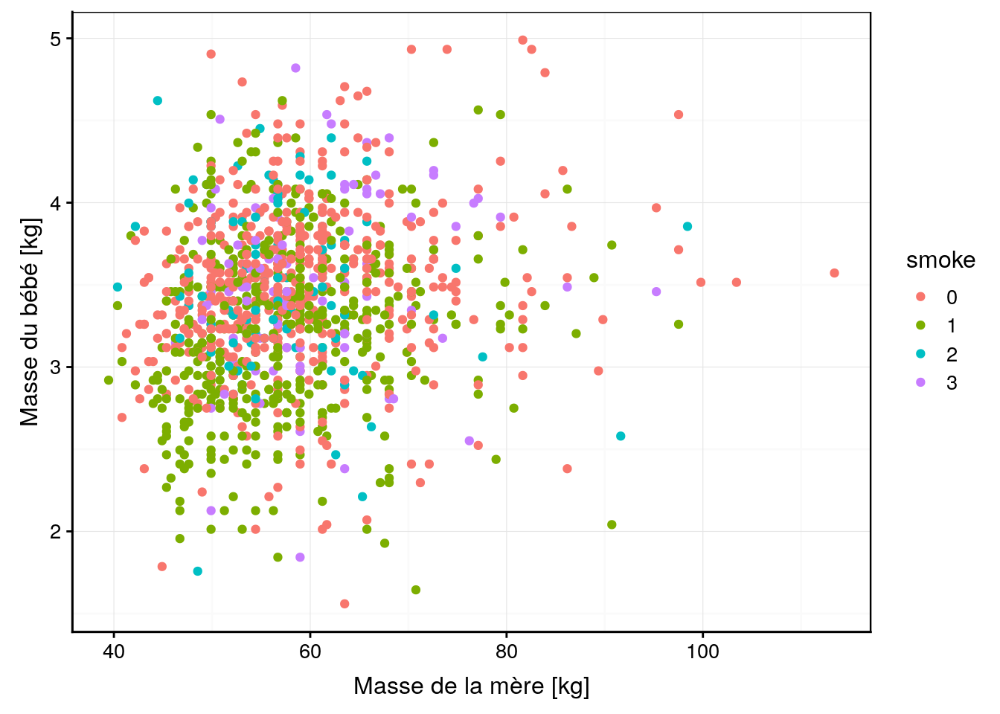
chart(data = Babies, wt ~ smoke) +
geom_boxplot() +
ylab("Masse du bébé [kg]")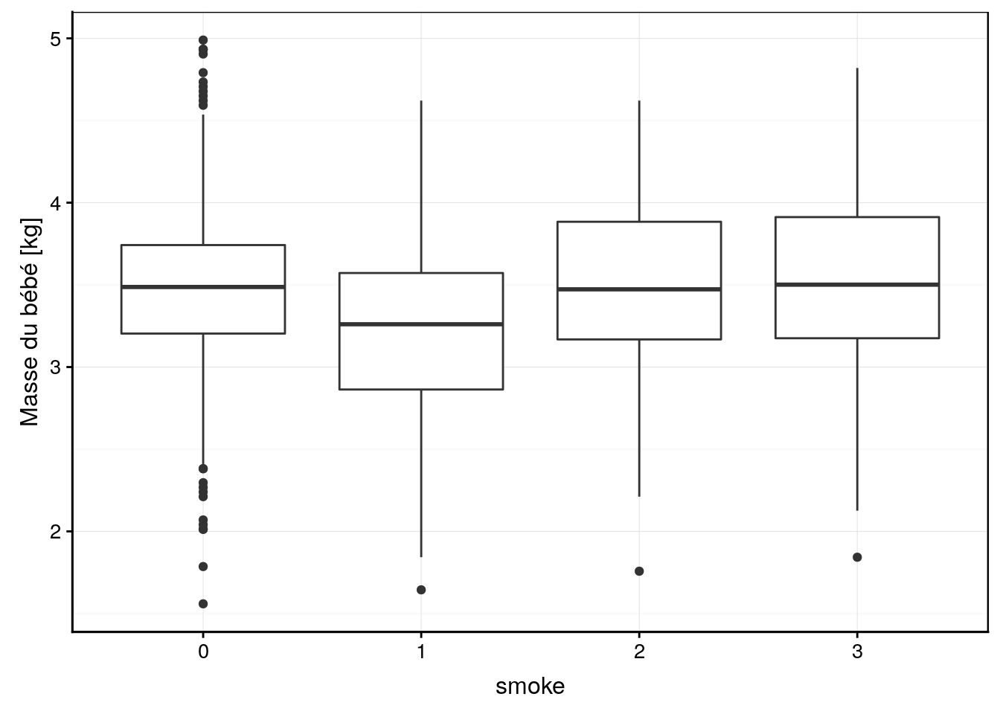
chart(data = Babies, wt1 ~ smoke) +
geom_boxplot() +
ylab("Masse de la mère [kg]")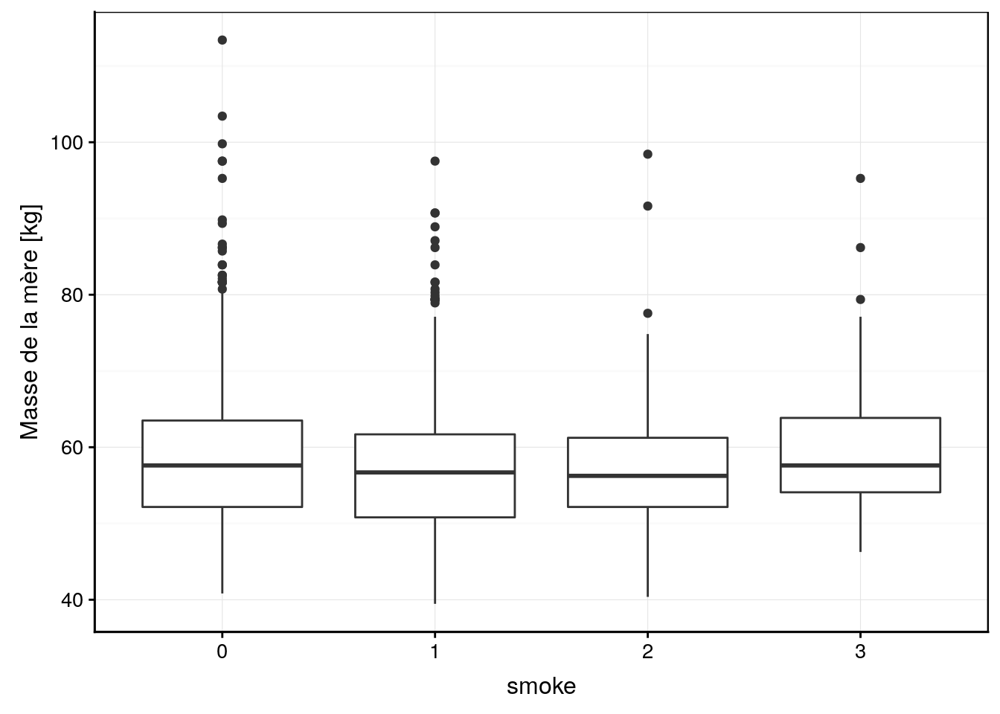
Visuellement, nous ne voyons pas d’effet marquant. Peut-être la condition 1 de smoke (mère qui fume pendant la grossesse) mène-t-il à des bébés moins gros, mais est-ce significatif ? Pour cela, ajustons notre modèle ANCOVA avec matrice traitement (choix par défaut pour une la variable factor smoke). Comme nous savons déjà utiliser lm(), c’est très simple. Cela fonctionne exactement comme avant7.
# ANCOVA
Babies_lm <- lm(data = Babies, wt ~ smoke * wt1)
summary(Babies_lm)#
# Call:
# lm(formula = wt ~ smoke * wt1, data = Babies)
#
# Residuals:
# Min 1Q Median 3Q Max
# -1.9568 -0.3105 0.0133 0.3136 1.4989
#
# Coefficients:
# Estimate Std. Error t value Pr(>|t|)
# (Intercept) 3.000663 0.128333 23.382 < 2e-16 ***
# smoke1 -0.303614 0.196930 -1.542 0.123405
# smoke2 0.901888 0.371393 2.428 0.015314 *
# smoke3 -0.035502 0.371379 -0.096 0.923858
# wt1 0.008117 0.002149 3.777 0.000167 ***
# smoke1:wt1 0.001153 0.003346 0.345 0.730444
# smoke2:wt1 -0.015340 0.006390 -2.401 0.016523 *
# smoke3:wt1 0.001177 0.006147 0.191 0.848258
# ---
# Signif. codes: 0 '***' 0.001 '**' 0.01 '*' 0.05 '.' 0.1 ' ' 1
#
# Residual standard error: 0.4992 on 1182 degrees of freedom
# Multiple R-squared: 0.08248, Adjusted R-squared: 0.07705
# F-statistic: 15.18 on 7 and 1182 DF, p-value: < 2.2e-16anova(Babies_lm)# Analysis of Variance Table
#
# Response: wt
# Df Sum Sq Mean Sq F value Pr(>F)
# smoke 3 18.659 6.2197 24.9636 1.158e-15 ***
# wt1 1 6.162 6.1621 24.7325 7.559e-07 ***
# smoke:wt1 3 1.653 0.5511 2.2117 0.08507 .
# Residuals 1182 294.497 0.2492
# ---
# Signif. codes: 0 '***' 0.001 '**' 0.01 '*' 0.05 '.' 0.1 ' ' 1L’analyse de variance montre que la masse de la mère a un effet significatif au seuil alpha de 5%, de même si la mère fume. Par contre, il n’y a pas d’interactions entre les deux. Le fait de pouvoir meurer des interactions entre variables qualitatives et quantitatives est ici bien évidemment un plus du modèle linéaire par rapport à ce qu’on pouvait faire avant !
Le résumé de l’analyse nous montre que la régression de la masse des bébés en fonction de la masse de la mère (ligne wt1 dans le tableau des coefficients), bien qu’étant significative, n’explique que 8% de la variance totale (le \(R^2\)). Les termes smoke1, smoke2 et smoke3 sont les contrastes appliqués par rapport au contrôle (smoke == 0). On voit ici qu’aucun de ces contrastes n’est significatif au seuil alpha de 5%. Cela signifie que le seul effet significatif est celui lié à une ordonnée à l’origine non nulle (Intercept) matérialisant la condition smoke == 0. Cela signifie que des mères de masse nulle n’ayant jamais fumé engendreraient des bébés pesant environ 3kg. Dans le contexte présent, cette constatation n’a bien sûr aucun sens, et l’interprétation de l’ordonnée à l’origine ne doit pas être faite. Donc, le modèle linéaire, en offrant plus de contrôle dans notre ajustement et une définition de contrastes “utiles” matérialisés par les lignes smoke1, smoke2 et smoke3 du tableau nous permet de faire des tests plus utiles dans le contexte de notre analyse.
N’oublions pas non plus la possibilité de déterminer si des interactions entre smoke et wt1 existent pour ces différents contrastes, interactions testées respectivements aux lignes smoke1:wt1, smoke2:wt1, et smoke3:wt1du tableau des coefficients. Dans le cas présent, aucune de ces interactions n’est siginificative au seuil alpha de 5%.
Pour comprendre à quoi tout cela fait référence, il faut considérer le modèle de base comme une droite de régression ajustée entre wt et wt1 pour la population de référence smoke == 0. Ainsi, si nous faisons :
summary(lm(data = Babies, wt ~ wt1, subset = smoke == 0))#
# Call:
# lm(formula = wt ~ wt1, data = Babies, subset = smoke == 0)
#
# Residuals:
# Min 1Q Median 3Q Max
# -1.95685 -0.25825 0.01476 0.25464 1.49890
#
# Coefficients:
# Estimate Std. Error t value Pr(>|t|)
# (Intercept) 3.000663 0.123572 24.283 < 2e-16 ***
# wt1 0.008117 0.002069 3.922 9.92e-05 ***
# ---
# Signif. codes: 0 '***' 0.001 '**' 0.01 '*' 0.05 '.' 0.1 ' ' 1
#
# Residual standard error: 0.4806 on 529 degrees of freedom
# Multiple R-squared: 0.02826, Adjusted R-squared: 0.02642
# F-statistic: 15.38 on 1 and 529 DF, p-value: 9.924e-05Nous voyons en effet que les pentes et ordonnées à l’origine sont ici parfaitement identiques au modèle ANCOVA complet (mais pas les tests associés).
Maintenant plus difficile : à quoi correspond une régression entre wt et wt1 pour smoke == 1 ?
summary(lm(data = Babies, wt ~ wt1, subset = smoke == 1))#
# Call:
# lm(formula = wt ~ wt1, data = Babies, subset = smoke == 1)
#
# Residuals:
# Min 1Q Median 3Q Max
# -1.70870 -0.35089 0.01034 0.33576 1.39420
#
# Coefficients:
# Estimate Std. Error t value Pr(>|t|)
# (Intercept) 2.697048 0.153270 17.597 < 2e-16 ***
# wt1 0.009270 0.002632 3.522 0.000471 ***
# ---
# Signif. codes: 0 '***' 0.001 '**' 0.01 '*' 0.05 '.' 0.1 ' ' 1
#
# Residual standard error: 0.5122 on 463 degrees of freedom
# Multiple R-squared: 0.02609, Adjusted R-squared: 0.02399
# F-statistic: 12.4 on 1 and 463 DF, p-value: 0.0004711Nous avons une ordonnées à l’origine qui vaut 2,70 ici. Notons que cela correspond aussi à (Intercept) + smoke1 = 3,00 - 0,30 = 2,70. Donc, l’ordonnées à l’origine pour smoke == 1 est bien la valeur de référence additionnée de la valeur fournie à la ligne smoke1 dans l’ANCOVA. Cela se vérifie aussi pour les deux autres droites pour smoke2 et smoke3.
Maintenant, la pente pour notre droite ajustée sur la population smoke == 1 uniquement vaut 0,00927. Dans l’ANCOVA, nous avions une pente wt1 de 0,00812 et une interaction smoke1:wt1 claculée comme 0,00115. Notez alors que la pente de la droite seule 0,00927 = 0,00812 + 0,00115. Donc, tout comme smoke1 correspond au décalage de l’ordonnée à l’origine du modèle de référence, les interactions smoke1:wt1 correspondent au décalage de la pente par rapport au modèle de référence. Cela se vérifie également pour smoke2:wt1 et smoke3:wt1.
Donc, notre modèle complet ne fait rien d’autre que d’ajuster les quatre droites correspondant aux relations linéaires entre wt et wt1, mais en décompose les effets, niveau par niveau de la variable qualitative smoke en fonction de la matrice de contraste que l’on a choisie. En bonnus, nous avons la possibilité de tester si chacune des composantes (tableau coefficient de summary()) ou si globalement chacune des variables (tableau obtenu avec anova()) a un effet significatif ou non dans le modèle.
Le graphique correspondant est le même que si nous avions ajusté les 4 régressions linéaires indépendamment l’une de l’autre (mais les tests et les enveloppes de confiance diffèrent).
chart(data = Babies, wt ~ wt1 %col=% smoke) +
geom_point() +
stat_smooth(method = "lm", formula = y ~ x) +
xlab("Masse de la mère [kg]") +
ylab("Masse du bébé [kg]")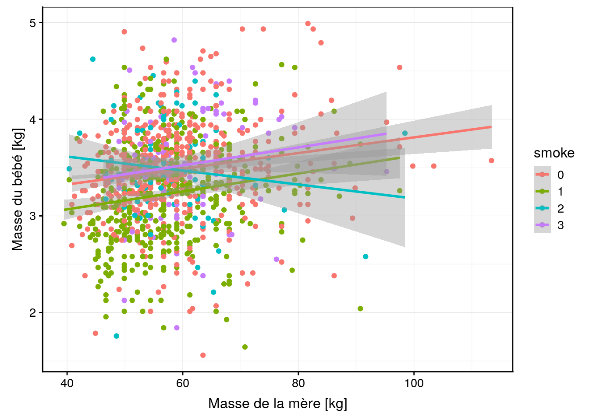
chart(data = Babies, wt ~ wt1 | smoke) +
geom_point() +
stat_smooth(method = "lm", formula = y ~ x) +
xlab("Masse de la mère [kg]") +
ylab("Masse du bébé [kg]")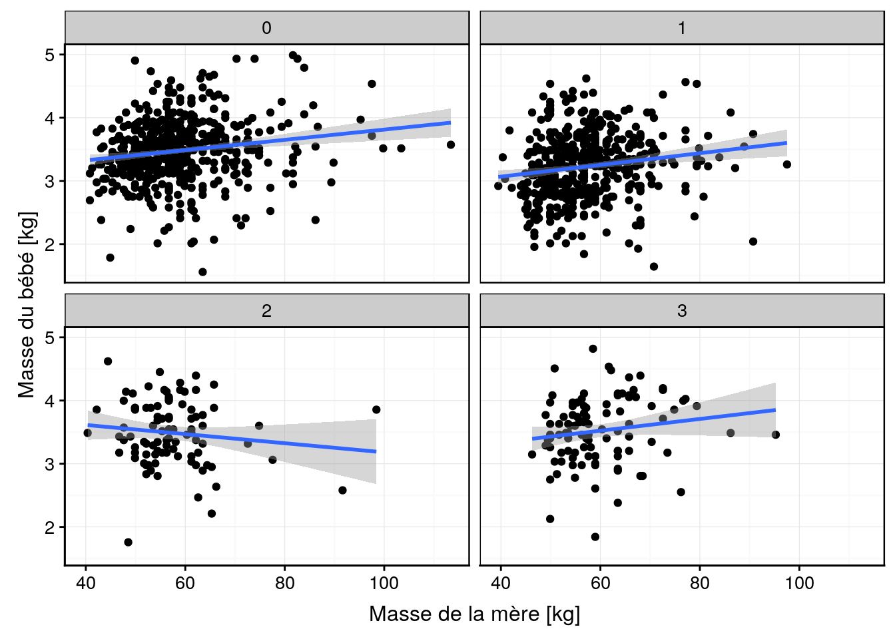
Comme toujours, lorsqu’un effet n’est pas siugnificatif, nous pouvons décider de simplifier le modèle. Mais attention ! Toujours considérer que les composantes sont interdépendantes. Donc, éliminer une composante du modèle peut avoir des effets parfois surprenants sur les autres.
Voyons ce que cela donne si nous éliminons les interactions. Dans ce cas, nous ajustons des droites toutes parallèles avec uniquement un décalage de leur ordonnée à l’origine matérialisé par smoke1, smoke2 et smoke3 par rapport au modèle de référence ajusté pour la population smoke == 0 (notez l’utilisation, du signe + dans la formuile, là où nous utilisions le signe * dans la modèle précédent).
# ANCOVA
Babies_lm2 <- lm(data = Babies, wt ~ smoke + wt1)
summary(Babies_lm2)#
# Call:
# lm(formula = wt ~ smoke + wt1, data = Babies)
#
# Residuals:
# Min 1Q Median 3Q Max
# -1.95453 -0.30780 0.01289 0.31108 1.49443
#
# Coefficients:
# Estimate Std. Error t value Pr(>|t|)
# (Intercept) 3.030052 0.092861 32.630 < 2e-16 ***
# smoke1 -0.237938 0.031816 -7.478 1.46e-13 ***
# smoke2 0.022666 0.056508 0.401 0.688
# smoke3 0.035486 0.054068 0.656 0.512
# wt1 0.007617 0.001534 4.966 7.85e-07 ***
# ---
# Signif. codes: 0 '***' 0.001 '**' 0.01 '*' 0.05 '.' 0.1 ' ' 1
#
# Residual standard error: 0.4999 on 1185 degrees of freedom
# Multiple R-squared: 0.07733, Adjusted R-squared: 0.07422
# F-statistic: 24.83 on 4 and 1185 DF, p-value: < 2.2e-16anova(Babies_lm2)# Analysis of Variance Table
#
# Response: wt
# Df Sum Sq Mean Sq F value Pr(>F)
# smoke 3 18.659 6.2197 24.887 1.285e-15 ***
# wt1 1 6.162 6.1621 24.657 7.853e-07 ***
# Residuals 1185 296.150 0.2499
# ---
# Signif. codes: 0 '***' 0.001 '**' 0.01 '*' 0.05 '.' 0.1 ' ' 1Hé, ça c’est intéressant ! Maintenant que nous avons éliminé les interactions qui apparaissent non pertinentes ici, nous avons toujours une régression significative entre wt et wt1 (mais avec un \(R^2\) très faible de 7,7%, attention), mais maintenant, nous faisons apparaitre un effet signicfication du contraste avec smoke1 au seuil alpha de 5%. Et du coup, les effets des deux variables deviennent plus clairs dans notre tableau de l’ANOVA.
Le graphique correspondant est l’ajustement de droites parallèles les unes aux autres pour les 4 sous-populations en fonction de smoke. Ce graphique est difficile à réaliser. Il faut ruser, et les détails du code vont au delà de ce cours (il n’est pas nécessaire de les comprendre à ce stade).
cols <- iterators::iter(scales::hue_pal()(4)) # Get colors for lines
chart(data = Babies, wt ~ wt1) +
geom_point(aes(col = smoke)) +
lapply(c(0, -0.238, 0.0227, 0.0355), function(offset)
geom_smooth(method = lm, formula = y + offset ~ x,
col = iterators::nextElem(cols))) +
xlab("Masse de la mère [kg]") +
ylab("Masse du bébé [kg]")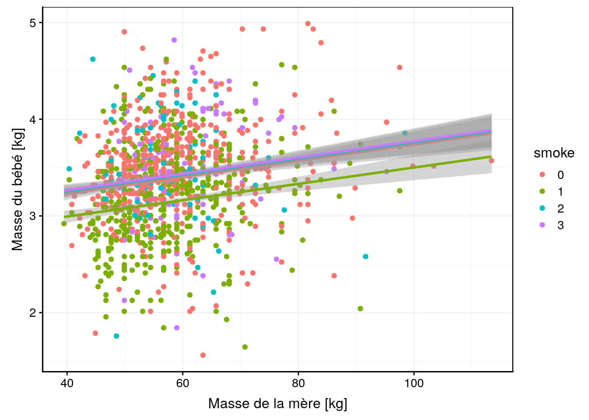
Voyons ce que donne l’analyse post hoc des comparaisons multiples (nous utilisons ici simplement le snippet disponible à partir de ... -> hypothesis tests -> hypothesis tests: means -> hmanovamult : anova - multiple comparaisons [multcomp]) que nous avons déjà employé et qui reste valable ici.
summary(anovaComp. <- confint(multcomp::glht(Babies_lm2,
linfct = multcomp::mcp(smoke = "Tukey"))))#
# Simultaneous Tests for General Linear Hypotheses
#
# Multiple Comparisons of Means: Tukey Contrasts
#
#
# Fit: lm(formula = wt ~ smoke + wt1, data = Babies)
#
# Linear Hypotheses:
# Estimate Std. Error t value Pr(>|t|)
# 1 - 0 == 0 -0.23794 0.03182 -7.478 < 1e-05 ***
# 2 - 0 == 0 0.02267 0.05651 0.401 0.977
# 3 - 0 == 0 0.03549 0.05407 0.656 0.908
# 2 - 1 == 0 0.26060 0.05704 4.568 2.86e-05 ***
# 3 - 1 == 0 0.27342 0.05478 4.991 < 1e-05 ***
# 3 - 2 == 0 0.01282 0.07199 0.178 0.998
# ---
# Signif. codes: 0 '***' 0.001 '**' 0.01 '*' 0.05 '.' 0.1 ' ' 1
# (Adjusted p values reported -- single-step method).oma <- par(oma = c(0, 5.1, 0, 0)); plot(anovaComp.); par(.oma); rm(.oma)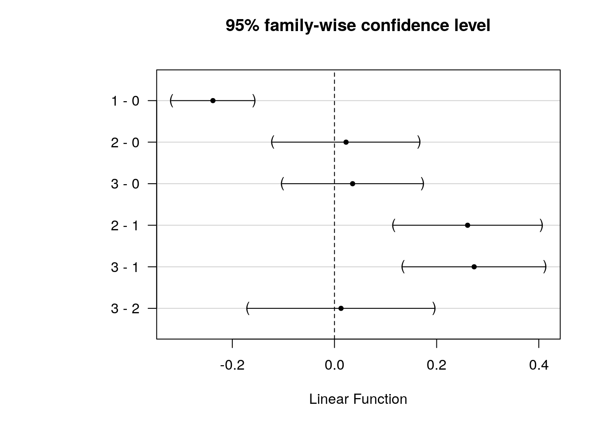
Ici, comme nous testons tous les contrastes, nous pouvons dire que la population des mères qui ont fumé pendant la grossesse smoke == 1 donne des bébés significativement moins gros au seuil alpha de 5%, et ce, en comparaison de tous les autres niveaux (mère n’ayant jamais fumé, ou ayant fumé mais arrêté avant la grossesse, que ce soit longtemps avant ou juste avant).
Il semble évident maintenant qu’il n’est pas utile de préciser si la mère a fumé ou non avant sa grossesse. L’élément déterminant est uniquement le fait de fumer pendant la grossesse ou non. Nous pouvons le montrer également en utilisant des contrastes de Helmert, à condition de recoder smoke avec des niveaux de “gravité” croissants (“0” = n’a jamais fumé, “1” = a arrêté il y a longtemps, “2” = a arrêté juste avant la grossesse et finalement, “1” = a continué à fumé à la grossesse). Il faut donc intervertir les cas “1” et “3”. Nous pouvons utiliser recode() pour cela, mais attention, nous avons ici une variable factor, donc, ce ne sont pas des nombres mais des chaines de caractères (à placer entre guillements). Une fois le recodage réalisé, il faut aussi retrier les niveaux en appelant factor(..., levels = c("0", "1", "2", "3")) sinon l’ancien ordre est conservé.
Babies %>.%
mutate(., smoke = recode(smoke, "0" = "0", "1" = "3", "2" = "2", "3" = "1")) %>.%
mutate(., smoke = factor(smoke, levels = c("0", "1", "2", "3"))) ->
Babies2Si cela semble trop compliqué, vous pouvez aussi utiliser l’addins de réencodage dans R (QUESTIONR -> Levels Recoding or Levels Ordering). A présent que l’encodage de smoke est corrigé dans Babies2, nous pouvons modéliser à nouveau, mais cette fois-ci avec des contrastes de Helmert (notez la façon particulière de spécifier des contrastes différents de la valeur pas défaut pour une variable factor) :
Babies_lm3 <- lm(data = Babies2, wt ~ smoke + wt1,
contrasts = list(smoke = "contr.helmert"))
summary(Babies_lm3)#
# Call:
# lm(formula = wt ~ smoke + wt1, data = Babies2, contrasts = list(smoke = "contr.helmert"))
#
# Residuals:
# Min 1Q Median 3Q Max
# -1.95453 -0.30780 0.01289 0.31108 1.49443
#
# Coefficients:
# Estimate Std. Error t value Pr(>|t|)
# (Intercept) 2.985106 0.091695 32.555 < 2e-16 ***
# smoke1 0.017743 0.027034 0.656 0.512
# smoke2 0.001641 0.019599 0.084 0.933
# smoke3 -0.064330 0.008540 -7.533 9.82e-14 ***
# wt1 0.007617 0.001534 4.966 7.85e-07 ***
# ---
# Signif. codes: 0 '***' 0.001 '**' 0.01 '*' 0.05 '.' 0.1 ' ' 1
#
# Residual standard error: 0.4999 on 1185 degrees of freedom
# Multiple R-squared: 0.07733, Adjusted R-squared: 0.07422
# F-statistic: 24.83 on 4 and 1185 DF, p-value: < 2.2e-16anova(Babies_lm3)# Analysis of Variance Table
#
# Response: wt
# Df Sum Sq Mean Sq F value Pr(>F)
# smoke 3 18.659 6.2197 24.887 1.285e-15 ***
# wt1 1 6.162 6.1621 24.657 7.853e-07 ***
# Residuals 1185 296.150 0.2499
# ---
# Signif. codes: 0 '***' 0.001 '**' 0.01 '*' 0.05 '.' 0.1 ' ' 1Ici les valeurs estimées pour smoke1-3 sont à interpréter en fonction des contrastes utilisés, soit :
contr.helmert(4)# [,1] [,2] [,3]
# 1 -1 -1 -1
# 2 1 -1 -1
# 3 0 2 -1
# 4 0 0 3smoke1est le décalage de l’ordonnée à l’origine entre la modèle moyen établi avec les donnéessmoke == 0etsmoke == 1et celui poursmoke == 1(non significatif au seuil alpha de 5%),smoke2est le décalage de l’ordonnée à l’origine poursmoke == 2par rapport au modèle ajusté sursmoke == 0,smoke == 1etsmoke == 2avec des pondérations respectives de -1, -1, et 2 (non significatif au seuil alpha de 5%),smoke3est le décalage de l’ordonnée à l’origine par rapport au modèle ajusté sur l’ensemble des autres observations, donc, avecsmokevalant 0, 1, ou 2, et des pondérations respectives comme dans la dernière colonne de la matrice de contraste.. Donc, ce dernier contraste est celui qui nous intéresse car il compare les cas où la mère n’a pas fumé pendant la grossesse avec le cassmoke == 3où la mère a fumé pendant la grossesse, et il est significatif au seuil alpha de 5%. L’interprétation des vlauers estimées est plus complexe ici. Comparer ce résultat avec le modèle ajusté avec les contrastes traitement par défaut avecsmokeréencodé :
summary(lm(data = Babies2, wt ~ smoke + wt1))#
# Call:
# lm(formula = wt ~ smoke + wt1, data = Babies2)
#
# Residuals:
# Min 1Q Median 3Q Max
# -1.95453 -0.30780 0.01289 0.31108 1.49443
#
# Coefficients:
# Estimate Std. Error t value Pr(>|t|)
# (Intercept) 3.030052 0.092861 32.630 < 2e-16 ***
# smoke1 0.035486 0.054068 0.656 0.512
# smoke2 0.022666 0.056508 0.401 0.688
# smoke3 -0.237938 0.031816 -7.478 1.46e-13 ***
# wt1 0.007617 0.001534 4.966 7.85e-07 ***
# ---
# Signif. codes: 0 '***' 0.001 '**' 0.01 '*' 0.05 '.' 0.1 ' ' 1
#
# Residual standard error: 0.4999 on 1185 degrees of freedom
# Multiple R-squared: 0.07733, Adjusted R-squared: 0.07422
# F-statistic: 24.83 on 4 and 1185 DF, p-value: < 2.2e-16Les conclusions sont les mêmes, mais la valeurs estimées pour smoke1, smoke2 et smoke3 diffèrent. Par exemple, dans ce dernier cas, smoke1 est double de la valeur avec les contrastes Helmert, ce qui est logique puisque la référence est ici la droite ajustée pour la sous-population smoke == 0 là où dans le modèle avec les contrastes de Helmert, le décalage est mesuré par rapport au modèle moyen (donc à “mi-chemin” entre les deux droites pour smoke == 0 et smoke == 1).
Naturellement, nous pouvons aussi considérer la variable smoke réencodée dans Babies2 comme une variable facteur ordonné (ordered). Dans ce cas, c’est les contrastes polynomiaux qui sont utilisés :
Babies2 %>.%
mutate(., smoke = as.ordered(smoke)) ->
Babies3
summary(lm(data = Babies3, wt ~ smoke + wt1))#
# Call:
# lm(formula = wt ~ smoke + wt1, data = Babies3)
#
# Residuals:
# Min 1Q Median 3Q Max
# -1.95453 -0.30780 0.01289 0.31108 1.49443
#
# Coefficients:
# Estimate Std. Error t value Pr(>|t|)
# (Intercept) 2.985106 0.091695 32.555 < 2e-16 ***
# smoke.L -0.162480 0.026780 -6.067 1.75e-09 ***
# smoke.Q -0.148045 0.039294 -3.768 0.000173 ***
# smoke.C -0.044605 0.048790 -0.914 0.360787
# wt1 0.007617 0.001534 4.966 7.85e-07 ***
# ---
# Signif. codes: 0 '***' 0.001 '**' 0.01 '*' 0.05 '.' 0.1 ' ' 1
#
# Residual standard error: 0.4999 on 1185 degrees of freedom
# Multiple R-squared: 0.07733, Adjusted R-squared: 0.07422
# F-statistic: 24.83 on 4 and 1185 DF, p-value: < 2.2e-16Notez comment R est capable d’utiliser automatiquement les contrasts adéquats (polynomiaux) lorsque la variable facteur smoke est encodée en ordered. Nous voyons ici que des contrastes tenant compte d’une variation le long des successions croissante de niveaux de “gravité” de la variable smoke sont maintenant calculés. La ligne smoke.L du tableau Coefficients indique une variation linéaire (significative au seuil alpha de 5%), smoke.Q est une variation quadratique (également significative) et enfin smoke.C est une variation cubique. Voyez la présentation des matrices de contrastes plus haut pour bien comprendre ce qui est calculé ici.
Au final, l’élément important relatif à la variable smoke est en définitive le fait de fumer pendant la grossesse ou non, pas l’histoire de la mère avant sa grossesse en matière de tabocologie ! En modélisation, nous avons toujours intérêt à choisir le modèle le plus simple. Donc ici, cela vaut le coup de simplifier smoke à une variable à deux niveaux smoke_preg qui indique uniquement si la mère fume ou non pendant la grossesse. Ensuite, nous ajustons à nouveau un modèle plus simple avec cette nouvelle variable.
Babies %>.%
mutate(., smoke_preg = recode(smoke, "0" = "0", "1" = "1", "2" = "0", "3" = "0")) %>.%
mutate(., smoke_preg = factor(smoke_preg, levels = c("0", "1"))) ->
Babies
Babies_lm4 <- lm(data = Babies, wt ~ smoke_preg + wt1)
summary(Babies_lm4)#
# Call:
# lm(formula = wt ~ smoke_preg + wt1, data = Babies)
#
# Residuals:
# Min 1Q Median 3Q Max
# -1.96243 -0.30708 0.01208 0.31051 1.48662
#
# Coefficients:
# Estimate Std. Error t value Pr(>|t|)
# (Intercept) 3.037508 0.091896 33.054 < 2e-16 ***
# smoke_preg1 -0.245797 0.029747 -8.263 3.76e-16 ***
# wt1 0.007624 0.001531 4.981 7.25e-07 ***
# ---
# Signif. codes: 0 '***' 0.001 '**' 0.01 '*' 0.05 '.' 0.1 ' ' 1
#
# Residual standard error: 0.4996 on 1187 degrees of freedom
# Multiple R-squared: 0.07692, Adjusted R-squared: 0.07537
# F-statistic: 49.46 on 2 and 1187 DF, p-value: < 2.2e-16anova(Babies_lm4)# Analysis of Variance Table
#
# Response: wt
# Df Sum Sq Mean Sq F value Pr(>F)
# smoke_preg 1 18.497 18.4971 74.106 < 2.2e-16 ***
# wt1 1 6.193 6.1934 24.813 7.253e-07 ***
# Residuals 1187 296.281 0.2496
# ---
# Signif. codes: 0 '***' 0.001 '**' 0.01 '*' 0.05 '.' 0.1 ' ' 1A présent, tous les termes de notre modèle sont significatifs au seuil alpha de 5%. La ligne smoke_preg1 est le décalage de l’ordonnée à l’origine du poids des bébés issus de mères fumant pendant la grossesse. Il donne donc directement la perte moyenne de poids du à la tabacologie. La représentation graphique de ce dernier modèle est la suivante :
cols <- iterators::iter(scales::hue_pal()(2)) # Get colors for lines
chart(data = Babies, wt ~ wt1) +
geom_point(aes(col = smoke_preg)) +
lapply(c(0, -0.246), function(offset)
geom_smooth(method = lm, formula = y + offset ~ x,
col = iterators::nextElem(cols))) +
xlab("Masse de la mère [kg]") +
ylab("Masse du bébé [kg]")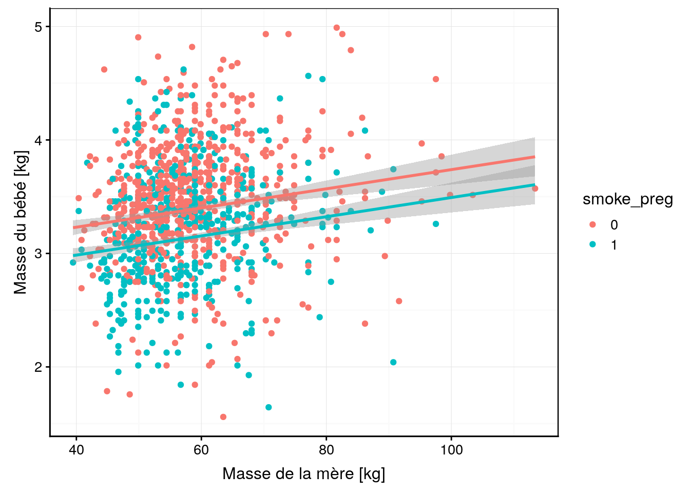
Enfin, n’oublions pas que notre modèle n’est valide que si les conditions d’application sont rencontrées, en particulier, une distribution normale des résidus et une homoscédasticité (même variance pour les résidus). Nous vérifions cela visuellement toujours avec les graphiques d’analyse des résidus. En voici les plus importants (pensez à utiliser les snippets pour récupérer le template du code) :
#plot(Babies_lm4, which = 1)
Babies_lm4 %>.%
chart(broom::augment(.), .resid ~ .fitted) +
geom_point() +
geom_hline(yintercept = 0) +
geom_smooth(se = FALSE, method = "loess", formula = y ~ x) +
labs(x = "Fitted values", y = "Residuals") +
ggtitle("Residuals vs Fitted")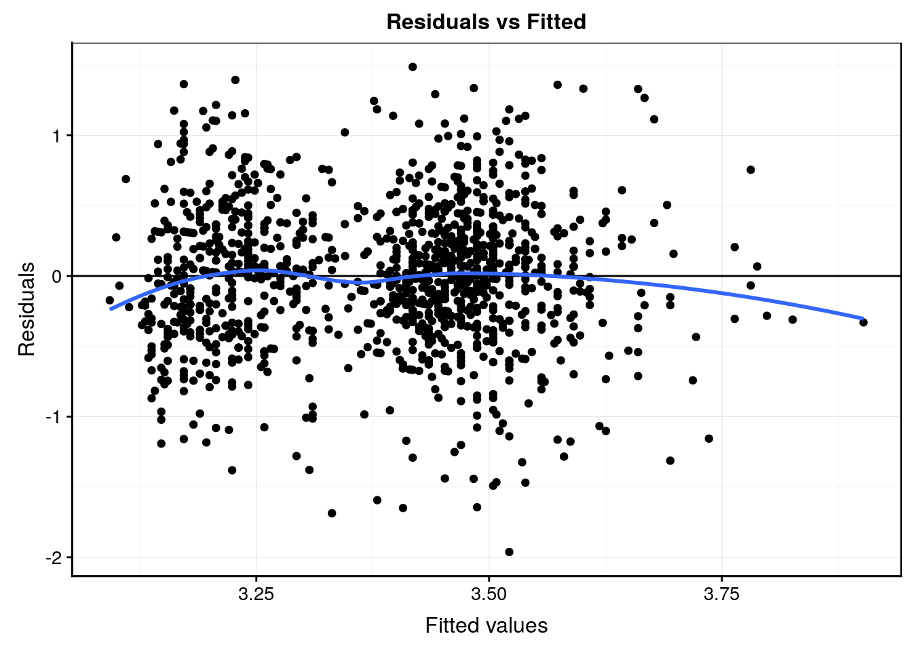
#plot(Babies_lm4, which = 2)
Babies_lm4 %>.%
chart(broom::augment(.), aes(sample = .std.resid)) +
geom_qq() +
geom_qq_line(colour = "darkgray") +
labs(x = "Theoretical quantiles", y = "Standardized residuals") +
ggtitle("Normal Q-Q")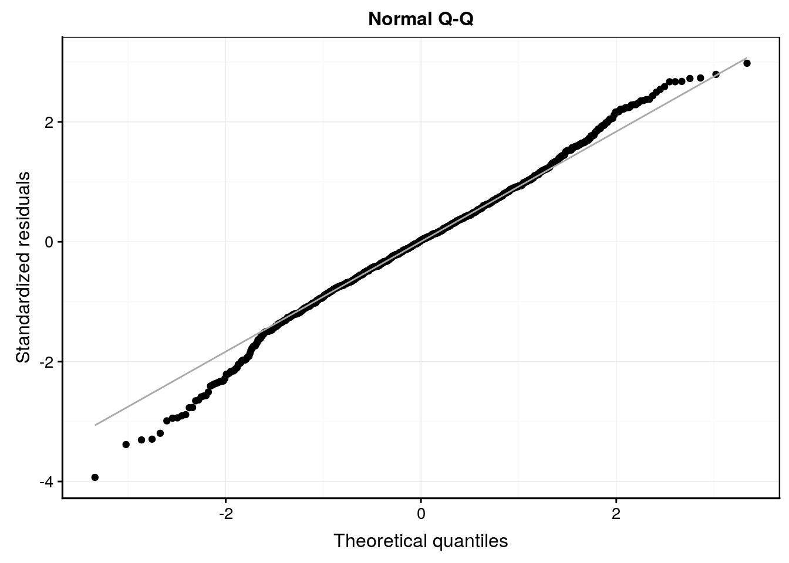
#plot(Babies_lm4, which = 3)
Babies_lm4 %>.%
chart(broom::augment(.), sqrt(abs(.std.resid)) ~ .fitted) +
geom_point() +
geom_smooth(se = FALSE, method = "loess", formula = y ~ x) +
labs(x = "Fitted values",
y = expression(bold(sqrt(abs("Standardized residuals"))))) +
ggtitle("Scale-Location")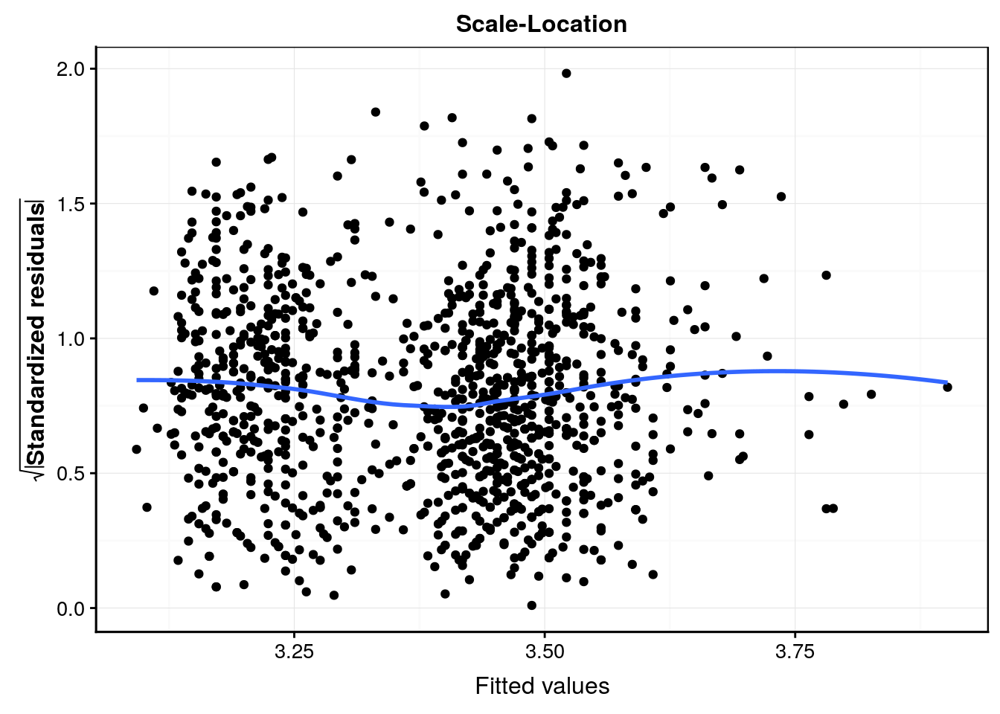
#plot(Babies_lm4, which = 4)
Babies_lm4 %>.%
chart(broom::augment(.), .cooksd ~ seq_along(.cooksd)) +
geom_bar(stat = "identity") +
geom_hline(yintercept = seq(0, 0.1, by = 0.05), colour = "darkgray") +
labs(x = "Obs. number", y = "Cook's distance") +
ggtitle("Cook's distance")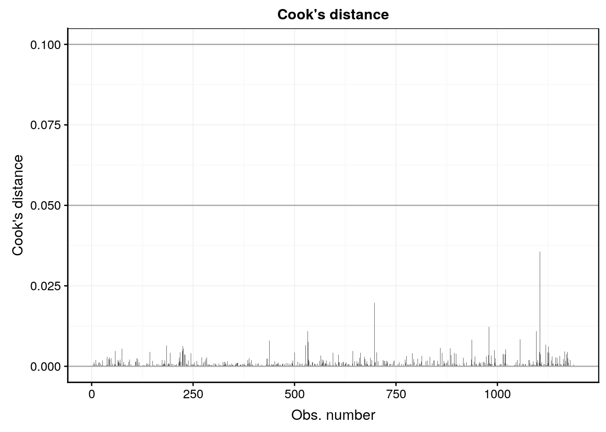
Ici le comportement des résidus est sain. Des petits écarts de la normalité sur le graphique quantile-quantile s’observent peut-être, mais ce n’est pas dramatique et le modèle linéaire est rabuste à ce genre de petis changements d’autant plus qu’ils apparaissent relativement symétriques en haut et et en bas de la distribution. En conclusion de cette analyse, nous pouvons dire que la masse du bébé dépend de la masse de la mère, mais assez faiblement (seulement 7,7% de la variance totale expliquée). Par contre, nous pouvons aussi dire que le fait de fumer pendant la grossesse a un effet significatif sur la réduction de la masse du bébé à la naissance (en moyenne cette réduction est de 0,246kg pour une masse moyenne à la naissance de 3,038kg, soit une réduction de 0,246 / 3,034 * 100 = 8%).
Voilà, nous venons d’analyser et d’interpréter notre premier modèle linéaire sous forme d’une ANCOVA.
A vous de jouer !
Après cette longue lecture avec énormément de nouvelles matières, nous vous proposons les exercices suivants :
- Répondez aux questions d’un learnr afin de vérifier vos acquis.
Démarrez la SciViews Box et RStudio. Dans la fenêtre Console de RStudio, entrez l’instruction suivante suivie de la touche Entrée pour ouvrir le tutoriel concernant les bases de R :
BioDataScience2::run("03a_mod_lin")ESC pour reprendre la main dans R à la fin d’un tutoriel dans la console R.
- Poursuivez l’analyse des données sur la biométrie des oursins en y intégrant vos nouvelles notions sur le modèle linéaire
Reprenez votre travail sur la biométrie des oursins et appliquer les nouvelles notions vues
Références
Verzani, John. 2005. Using R for Introductory Statistics. Boca Raton, Florida: Chapman; Hall/CRC. https://www.crcpress.com/Using-R-for-Introductory-Statistics/Verzani/p/book/9781466590731.
Pour rappel, on utilise le signe
+pour indiquer un modèle sans interactions et un signe*pour spécifier un modèle complet avec interactions entre les variables.↩